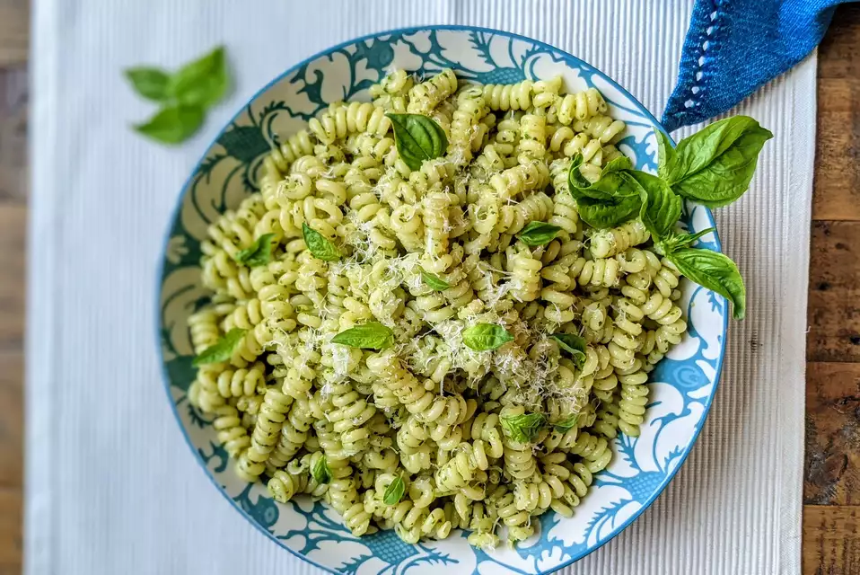

Pesto Pasta

Ingredients
- .5 cup chopped onion
- 2.5 tablespoons pesto
- 2 tablespoons olive oil
- 2 tablespoons grates parmesan cheese
- 1 (16 oz) package pasta
- salt to taste
- ground black pepper to taste
Directions
- Cook pasta ina a large pot of boiling water until done. Drain.
- Meanwhile, heat the oil in a frying pan over medium low heat. Add pesto, onion, and salt and pepper. Cook about five minutes, or until onions are soft.
- In a large bowl, mix pesto mixture into pasta. Stir in grated cheese. Serve.